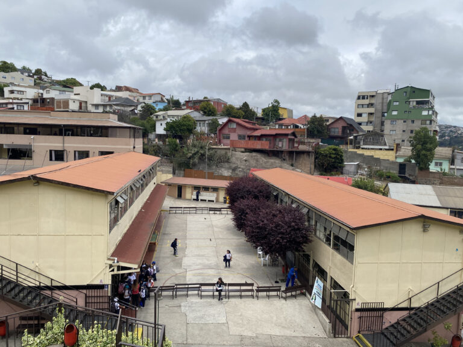

Justicia de Mercado y Merecimiento del Bienestar Social
El presente proyecto de investigación se enfoca en analizar las preferencias por justicia de mercado en Chile y su…
¡Bienvenid_ a mi sitio! Acá busco poner a disposición mi trabajo académico de investigación, docencia y extensión de la manera más abierta posible.
Soy profesor titular en el Departamento de Sociología de la Universidad de Chile. Actualmente soy presidente del Research Committee 42 (Social Psychology) de la International Sociological Association, y miembro del Scientific Advisory Board del Social Science Research Center Berlin (WZB).
Realicé mi doctorado en sociología en el Instituto de Ciencias Sociales de la Universidad de Humboldt, Berlin. Desde entonces me dedico principalmente a la investigación en temas de justicia distributiva desde una metodología cuantitativa, utilizando metodos multinivel, ecuaciones estructurales, y herramientas de ciencia abierta. Actualmente, mi foco de investigación se centra en meritocracia y merecimiento utilizando experimentos de encuestas y análisis de datos de panel, en el márco de mi proyecto FONDECYT Regular 2025-2028 “JUSMER: Justicia de Mercado y Merecimiento del Bienestar Social”
Anteriormente fui subdirector e investigador principal del Centro de Estudios de Conflicto y Cohesión social COES (2013-2025), e investigador principal del Núcleo Milenio de Desigualdades y Oportunidades Digitales NUDOS (2023-2025). Fui profesor en el Instituto de Sociología de la Pontificia Universidad Católica de Chile (2014-2018) y coordinador del área de investigación del Centro de Medición MIDE UC (2010-2013).
Estudié en la escuela 227 de Miraflores, Viña del Mar 
Proyectos
Publications
Docencia
Guía y Comité de Tesis
Post Recientes
Galería
.jpeg)